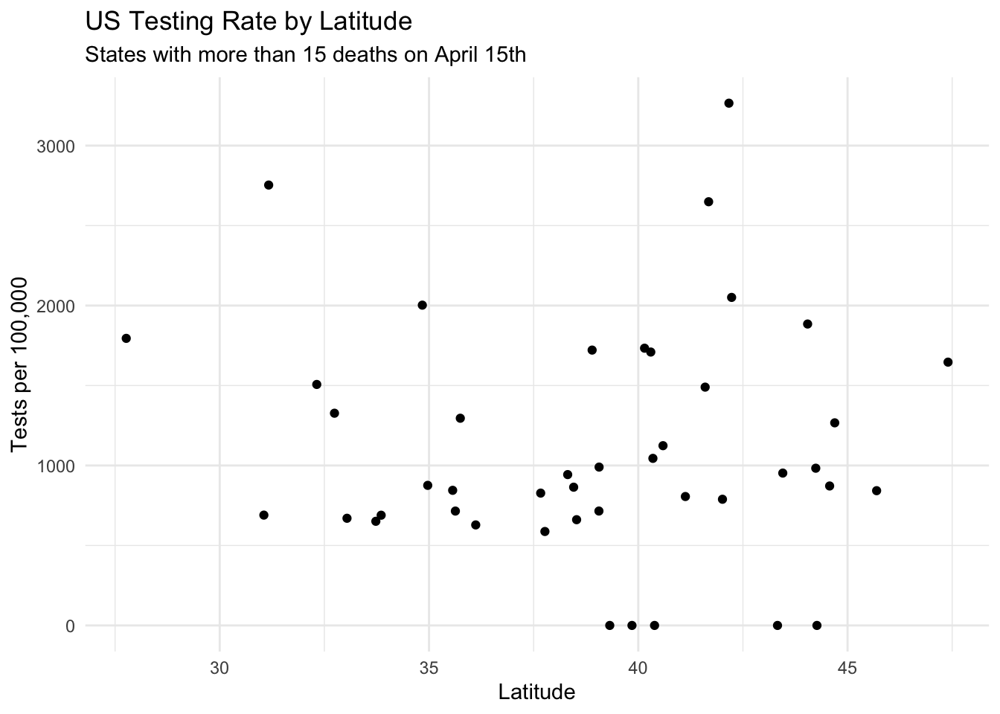

In a recent interview, Linda Villarosa outlines the three major causes that she and other public health researchers have identified as causes for the huge racial gap in Covid mortality:
1) Proximity to the virus
Black people live and work in environments where the virus is difficult to escape. They are more likely to work in essential services where it is difficult to engage in social distancing, and they are more likely to live in inter-generational homes in densely populated areas. All of this leads to more contact with the virus; more contact leads to more infection, and more infection leads to more death.
2) Racial bias in healthcare
Black people receive worse healthcare than white people. Black patients are less likely to be believed by physicians, essential interventions are more likely to be delayed, and resources tend to be allocated to white patients. Naturally, if you get worse healthcare because of your skin colour, your outcomes are going to be worse.
3) Pre-existing conditions
For a variety of reasons, Black Americans have higher rates of conditions that make Covid-19 more dangerous. Rates of diabetes, hypertension, and asthma are all higher in Black communities, which leads to higher Covid-19 mortality.
It’s helpful to draw this model as a graph to show the causal relationship:
What bothers me about this this model is that it leads to a pretty fatalistic perspective on Covid mortality. Most of the damage from the Covid pandemic is going to take place over the next 1-2 years, and it’s hard to imagine any of these systemic factors changing significantly during that time period. We’re probably not going to make major changes to our housing or economy such that Black people are not disproportionately proximate to the virus, and it’s unlikely that rates of pre-existing conditions can be modified in a year. It’s possible that bias in healthcare can be remedied, but I’m unaware of any project that has improved unconscious racial bias at such a large scale in such a short period of time. The result is that if you think that this is a complete model of excess Covid mortality, it seems likely that excess mortality is already baked into the system, and while tragic it’s not treatable. Even if these are major causes, they’re not causes that we can realistically modify over the next two years.
I think this is pretty dangerous because it leads researchers to effectively triage Black communities. If we’re certain that these are the only factors, and we’re also fairly certain that they can’t be changed within the necessary time span, what’s the point of studying the matter? Wouldn’t research energy be better spent reducing the overall incidence of the virus, rather than looking at relative differences between groups?
The fact is that we don’t know that much about Covid-19, so it’s possible that this isn’t a complete causal model and there are things that we can change to reduce excess mortality among people of colour. If we have too much certainty that this excess mortality is socially determined,
then researchers won’t invest time or money trying to figure out things that can be treated.
The vitamin D model
I’ve been very interested in vitamin D deficiency as a potential cause of Covid-19 mortality because it’s one of the best treatment candidates for widespread use. Unlike other potential therapies, we already have a lot of vitamin D clinical research data and we know that it’s safe to consume prophylactically. Vitamin D would also go a long way to explain why people of colour are dying at such high rates in the northern hemisphere where sunlight is currently scarce, but not in equatorial or southern parts of the world where sunlight is currently abundant. While skin colour is not the only factor that changes serum vitamin D, and race is a social category that’s only loosely related to skin colour, it is the case that in most northern latitudes people with darker skin (tend to have lower vitamin D)[https://nutrition.bmj.com/content/early/2020/05/20/bmjnph-2020-000096#ref-13] levels in the winter.
It’s important to be clear about the causal model I’m proposing. I am not arguing for a model like this one where vitamin D is the only relevant factor:
Instead, the vitamin D model adds vitamin D to all the other stuff that causes excess mortality. It might look like this:
What does the data say?
Of course none of this matters if it turns out that vitamin D is not a factor. So far there have been two main strategies that point in the direction that vitamin D, or some other unidentified factor which varies by latitude, is involved in Covid-19 mortality.
Mendelian Randomization
A recent study provides a strong argument that the missing factor is vitamin D. The study uses a technique called mendelian randomisation, which requires a bit of explanation: In the ideal world, we would answer the question of whether vitamin D deficiency increases your risk of dying of Covid-19 by controlling for vitamin D in the model, but we don’t have information about everyone’s vitamin D levels. Mendelian randomization is the idea that if you have information about something that you know is related to the thing you wish you had data on, then you can include that as a proxy. In this case we know that people with darker skin tend to have lower vitamin D levels than people with lighter skin, and that that probably gets worse as you move north. The intuition here is that the skin’s ability to synthesize vitamin D is less important in Florida than Wisconsin because intense UVB radiation is abundant for most of the year. So this study uses race + latitude as a proxy for vitamin D levels.
The rules of mendelian randomization are that the randomizing factor can’t be directly associated with the outcome, and it can’t be associated with other explanatory factors.
So if you think the causal graph looks like this, mendelian randomization is appropriate:
The BMJ study found that excess mortality went up as you went north. Places like Alabama, which we typically think of as having bad racial health outcomes, had lower excess Covid mortality than places like Wisconsin, which we generally assume have at least somewhat better racial health outcomes. This is a pretty good argument for vitamin D’s involvement because it’s hard to find a story where latitude modifies other inputs into the Covid mortality. This isn’t to say that there’s no such story, but the most obvious one is that vitamin D deficiency increases risk of Covid-19 complication. This is the main graphic from the paper:

Does latitude act directly on mortality?
The other way that mendelian randomization can be invalid is if the proxy acts directly on the outcome variable. In this case, that would mean that latitude directly increased excess Covid mortality. At first glance it’s hard to think of how this would happen, but if you add testing to the model it becomes a bit clearer. If southern states have worse testing, and in particular are less likely to test Black people, Covid deaths would be misclassified as some other kind of mortality. The result would be that excess mortality would look lower, because Covid deaths among Black people were being under-counted.
I don’t have access to any data that shows testing by race and state, but we can look at the overall testing rate to see if that varies by latitude. The intuition here is that in places with abundant testing, racial bias would be less of a factor than in the places with scarce testing. Again, there doesn’t look to be much of a relationship here:

Conclusion
To reiterate, this argument is not to dispute the factors that Villarosa proposes. None of the papers about vitamin D and Covid challenge the idea that healthcare bias, pre-existing conditions, and proximity to the virus are major causes of excess mortality, and in fact all of the data supports that conclusion. What this does challenge is the idea that that’s the whole story. It seems like excess Covid mortality among people with darker skin is not completely explained by socioeconomics, location, or pre-existing medical condition. And if that’s true, it’s good news because it means that there may be something we can do about it. Vitamin D is a good candidate for that missing piece because it helps to explain why latitude would increase the racial gap in Covid mortality.